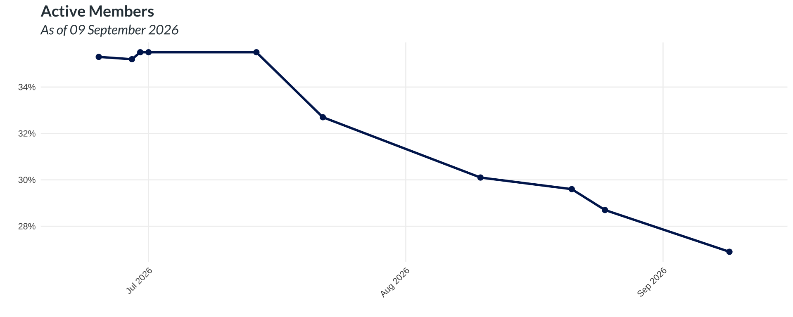
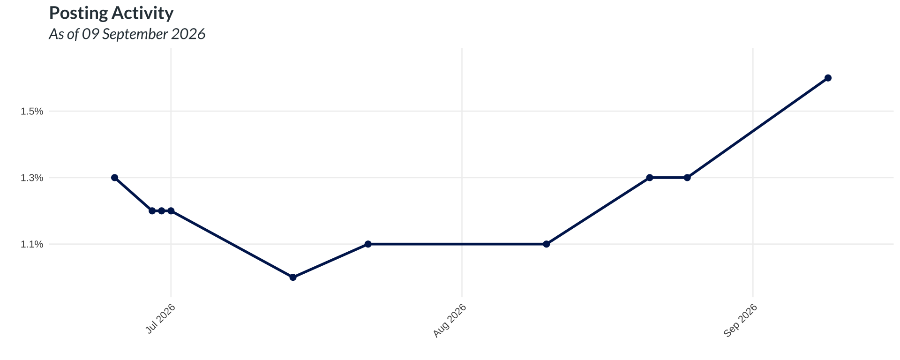
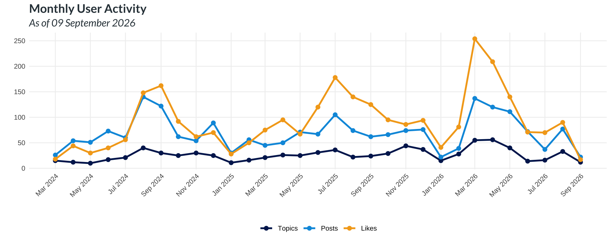
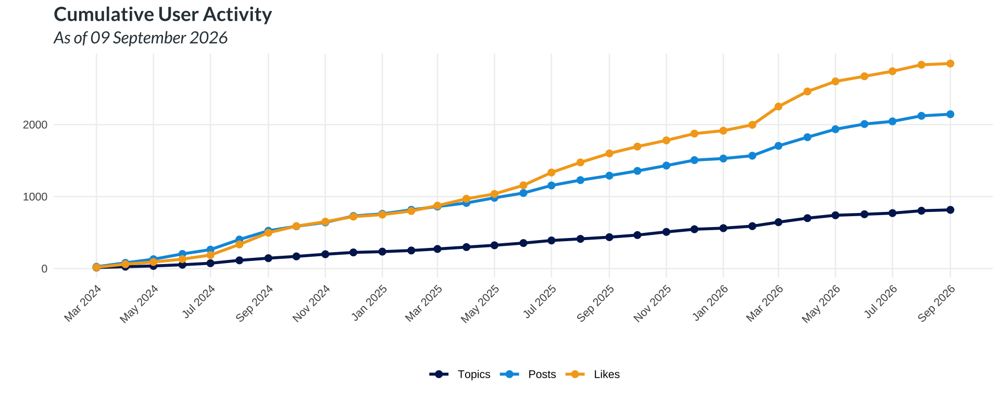
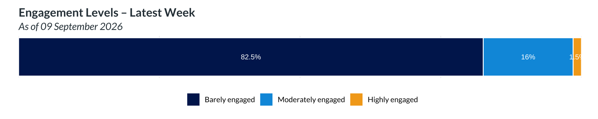

Active Members
542 out of 2017 users were active, which is 26.9% of the community. The target for this indicator is set as ≥ 30%.
The proportion of active members reflects users who logged in at least once within the past 90 days, based on weekly snapshots. Members who have not logged in during that 90-day window are considered inactive (dormant or uninterested).
Posting Activity
1.6% of members posted at least once in the most recent month.
Posting activity tracks sustained member interaction with the platform by measuring the proportion of users who post at least once per month through Collaboratory channels.

The volume of posts, likes, and topics reflects total community activity over time.


Engagement
Monthly engagement metrics provide an overview of user activity on the forum. These include total and new user counts, along with averages for user activity.Users are classified by recency of activity:
- Active: last seen within 90 days
- Dormant: last seen 91–180 days ago
- Uninterested: last seen more than 180 days ago
Engagement intensity is assessed based on the average time a user spends reading per month, normalized by account age, enabling comparison across all users. Based on this measure, users are categorized as:
- Highly Engaged: 15 or more minutes per month
- Moderately Engaged: between 2 and 15 minutes per month
- Barely Engaged: less than 2 minutes per month
All figures reflect month-over-month changes to support interpretation of longer-term trends. Note that the monthly change for activity and engagement reflects increases or decreases in absolute numbers, and does not indicate changes in their proportional share of the user base.
| Metric (AVG) | 09 Sep 2026 | 22 Jul 2026 | Monthly Change |
|---|---|---|---|
| Time spent (mins) | 24.8 | 24.5 | 1.3% |
| Topics entered | 12.0 | 11.8 | 1.5% |
| Posts read | 26.9 | 26.4 | 1.7% |
| Likes given | 1.3 | 1.3 | 0.7% |
| Topics created | 0.4 | 0.3 | 2.1% |
| Posts created | 0.6 | 0.6 | 0.6% |
| Likes received | 1.3 | 1.3 | 0.8% |
| Category | 09 Sep 2026 | 22 Jul 2026 | Monthly Change |
|---|---|---|---|
| Active | 542 | 542 | 0% |
| Dormant | 361 | 308 | 17.2% |
| Uninterested | 1114 | 1088 | 2.4% |
| Total | 2017 | 1938 | 4.1% |
| Category | 09 Sep 2026 | 22 Jul 2026 | Monthly Change |
|---|---|---|---|
| Highly engaged (15+ min/month) | 30 | 29 | 3.4% |
| Moderately engaged (2-15 min/month) | 322 | 314 | 2.5% |
| Barely engaged (under 2 min/month) | 1665 | 1595 | 4.4% |
| Total | 2017 | 1938 | 4.1% |
The following tables replicate the previous engagement analysis but exclude users affiliated with the Secretariat. This adjustment allows for a clearer view of engagement patterns among the broader user base, without the influence of highly active administrative accounts.
| Metric (AVG) | 09 Sep 2026 | 22 Jul 2026 | Monthly Change |
|---|---|---|---|
| Time spent (mins) | 17.7 | 17.5 | 1% |
| Topics entered | 10.2 | 10.0 | 1.7% |
| Posts read | 22.7 | 22.3 | 2% |
| Likes given | 0.9 | 0.9 | 0.4% |
| Topics created | 0.2 | 0.2 | -0.5% |
| Posts created | 0.4 | 0.4 | 0.2% |
| Likes received | 0.9 | 0.9 | -0.2% |
| Category | 09 Sep 2026 | 22 Jul 2026 | Monthly Change |
|---|---|---|---|
| Active | 530 | 530 | 0% |
| Dormant | 361 | 308 | 17.2% |
| Uninterested | 1114 | 1088 | 2.4% |
| Total | 2005 | 1926 | 4.1% |
| Category | 09 Sep 2026 | 22 Jul 2026 | Monthly Change |
|---|---|---|---|
| Highly engaged (15+ min/month) | 22 | 21 | 4.8% |
| Moderately engaged (2-15 min/month) | 318 | 310 | 2.6% |
| Barely engaged (under 2 min/month) | 1665 | 1595 | 4.4% |
| Total | 2005 | 1926 | 4.1% |
Engagement Levels

Collaborative Resources and Repositories
Members share resources and tools through Collaboratory, highlighting collaboration and the exchange of knowledge within the community.
Repository and Resource Metrics
- Total repositories (all types): 24
- Repositories linked to communities: 20
- Number of communities with at least one repository: 8
- Total uploads (tools and resources): 385
Repository Engagement
- Number of collaborators: 34
- Number of watchers: 72
Note: Counts may include overlaps across repositories.